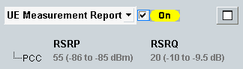
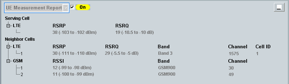

To display the measurement report information, select "UE Measurement Report" in the field below the event log area.
The displayed information is retrieved from "measurement reports" provided by the connected UE. The individual report values are defined in 3GPP TS 36.133.
To enable/disable measurement reports, use the checkbox.

The minimized default presentation shows all measurement report values for the serving LTE cell.
To show also neighbor cell measurement results, press the button to the right. It maximizes the area vertically.
To maximize the area also horizontally, press the button again.

Neighbor cell measurements are by default disabled and can be enabled separately for each neighbor cell, see "Neighbor Cell Settings". Option R&S CMW-KS510 is required.
The measurement results displayed in the maximized report area are described in the following. Configured neighbor cell settings are also displayed (band, channel, ...).
The reference signal received power (RSRP) denotes the average power of the resource elements carrying cell-specific reference signals.
The measurement report displays the reported dimensionless value and in brackets the corresponding measured value range. For carrier aggregation scenarios, the information is displayed per carrier.
Remote command:Plus corresponding PCC commands.
The reference signal received quality (RSRQ) is calculated as RSRQ = N×RSRP / (E-UTRA carrier RSSI). N is the number of resource blocks in the measurement bandwidth. The "E-UTRA carrier RSSI" denotes the average of the total received power (including interferers, and so on), observed in OFDM symbols containing reference symbols for antenna port 0.
The measurement report displays the reported dimensionless value and in brackets the corresponding measured value range. For carrier aggregation scenarios, the information is displayed per carrier.
Remote command:Plus corresponding PCC commands.
The RSRP and RSRQ reported for LTE neighbor cells is displayed in the same way as the values for the serving cell.
Remote command:The received signal strength indicator (RSSI) denotes the received wideband power within the GSM channel bandwidth, measured on a GSM BCCH carrier.
The measurement report displays the reported dimensionless value and in brackets the corresponding measured value range.
Remote command:The received signal code power (RSCP) denotes the received power on one code, measured on the primary CPICH of the neighbor WCDMA cell.
The Ec/No denotes the ratio of the received energy per PN chip for the primary CPICH to the total received power spectral density in the WCDMA band.
The measurement report displays the reported dimensionless values and in brackets the corresponding measured value range.
Remote command:The pilot PN phase indicates the arrival time of a pilot, measured relative to the time reference of the UE in units of PN chips. For details refer to 3GPP2 C.S0005, section 2.6.6.2.4.
The pilot strength denotes the ratio of the received pilot energy per chip to the total received power spectral density in the signal bandwidth of the forward channel.
For reporting, the ratio is converted into a dB value, multiplied with -2 and truncated, so that a positive integer value is reported (0 to 63):
Reported pilot strength value = INT (-2 * 10 log10(pilot energy / total power))
For more details refer to 3GPP2 C.S0005, section 2.6.6.2.2 and section 2.7.2.3.2.5.
Remote command:The received signal code power (RSCP) denotes the received power, measured on the P-CCPCH of the neighbor TD-SCDMA cell.
The measurement report displays the reported dimensionless values and in brackets the corresponding measured value range.
Remote command:The received signal strength indicator (RSSI) denotes the received power within an SCC DL channel. The measurement is only relevant for frame structure type 3 (LAA).
The measurement report displays the reported dimensionless value. For the mapping to dBm values, see 3GPP TS 36.133, table 9.1.18.5.1-1.
Remote command:The channel occupancy is the percentage of samples, where the measured RSSI value is greater than the configured threshold, see "Channel Occupancy Threshold".
The measurement is only relevant for frame structure type 3 (LAA).
Remote command: